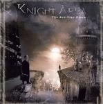

Home Artist links Label link

Knight Area - The Sun Also Rises
| Artist: | Knight Area |
| Title: | The Sun Also Rises |
| Label: | Laser's Edge LE-1037 |
| Length(s): | 50 minutes |
| Year(s) of release: | 2004 |
| Month of review: | [04/2004] |
Line up
Gerben Klazinga - keyboards, drums on 1, 2, 5 and 9, vocals on 8
Joop Klazinga - flute on 2-9
Ron van der Bas - bass on 2-6 and 9
Kees Flameling - accordion on 2
Vincent Frijdal - acoustic guitar on 6
Arjan Groenendijk - guitar on 4, 6, 7 and 9
Peter van Heijningen - lead guitar on 1, 2, 4, 6, 9 and 10
Jeroen Hogenboom - guitar 1-5 and 7-9
Gijs Koopman - bass on 1 and 3-6, bass pedals on 1-3
Stephanie Lagrande - vocals on 7
Mark van Nieuwenhuizen - drums on 3-5
Mark Smit - lead vocals on 2-4 and 6-9
Tracks
| 1) | Beyond... | 0.27
|
| 2) | The Gate Of Eternity | 7.21
|
| 3) | Conspiracy | 5.38
|
| 4) | Forever Now | 4.21
|
| 5) | The Sun Also Rises | 5.51
|
| 6) | Conviction | 5.44
|
| 7) | Mortal Brow | 6.21
|
| 8) | Moods Inspiring Clouds | 5.14
|
| 9) | A New Day At Last (For Ferry) | 5.12
|
| 10) | Saevis Tranquillis In Undis | 3.41
|
Summary
Once upon a time, the rustic town of Boskoop (6km from my hometown) harboured the Dutch symphonic band Sangamo. They recorded a number of demo tapes,
and finally a mini cd. The main composer of this band has now composed and
recorded a project which has been dubbed Knight Area.
On this album he is supported by a bunch of Dutch (prog)
musicians, including some people from the demised Cliffhanger.
Having come across one of the brothers in a local record shop,
the two came over to my house to play the album to me, now a month
or six ago.
Surprisingly, the band has been enlisted for the American progressive
label Laser's Edge, and has now been released and been getting lots
of attention and selling quite well in the process.
The music
Beyond... is a tribute to IQ, that is at least how I view, with the typical
Mike Holmes sound and IQish melodies. After this short intro we run into
The Gate Of Eternity. After some choir work, the main vocal melody takes over,
and it is a good one. This song is quite heavily Floyd influenced, especially
the slow solo in the middle. The vocals remind me a bit the Dutch US. I always
tend to hear some special characteristic in the English vocals of Dutch
singers. Nothing disturbing though, and he sings well. Now the acoustic
guitar is strumming along and the accordian has set in, the music takes
on a more folky character, but not for very long, because then the band
bursts loose with heavy (rhythm) guitars and full organ and mellotron.
The guitar solo which follows up is melodic again, with the rhytm guitar
setting back in for rhythmic support. Very good. Brother Joop adds his two
cents on flute, constrasting well with the driving guitars. Pure symphonic
rock.
Conspiracy opens with Mark Kelly like keyboards, very upbeat with the guitars
rocking along. The melody on the organ is quie mellow on the other hand,
and has a strong IQ feeling again. Notwithstanding the variation, all
the transitions make for perfect sense. At times the atmosphere
borders on Genesis.
Forever Now is another high energy dose of symphonic rock, fast,
melodious, with a few quieter passages for contrast. The main reference
is IQ again (listen to that Holmesian guitar line), but the sound is a bit
fuller and energetic. Powerful stuff, and the drummer has a good drive here.
After these up-tempo songs, The Sun Also Rises brings back a bit of peace.
The keyboards are the dominating factor here. There is a Banksian feel here
at first, but later Martin Orford comes in again. The build up has similarities to the final track on the first Subterranea disc.
Conviction is a catchier track, more in the line of Arena. Again, the
melodic material is fine, and the rendition is energetic. A compact song.
Mortal Brow takes gas back again, but also reintroduces the more symphonic
elements. Stephanie Lagrande adds her backing vocals and she does that well.
I am reminded of Tracy Hitchings, but Lagrande's voice is warmer and lower.
Gregorian vocals crop up here and there. The final melody is a great one.
Aha, Moods Inspiring Clouds. For some reason, the opening melody sounds very
much like Carly Simon's Coming Around Again. But maybe this is just me.
I like it when the vocalist sings a bit higher, and shows a bit more of
himself, be more expressive, like he does here. I am not always satisfied
with the lyrics. Not that the English is bad, but some turns of phrases
do not feel right. There is something of the soft side of Cliffhanger on this
one (the older more Genesis oriented side).
A New Day At Last (For Ferry) opens with piano, giving way soon to more
bombastic outbursts. Again, the melodic material is strong. I can very well
understand how this can come over live (with the right band in the right
state of mind). The music is quite passionate, and has the ability to
captivate. Time for a bit of laid back jazz on piano now.
Saevis Tranquillis In Undis is the closing track of this album.
This is a moody, but friendly tune on keyboards, working as a kind of
peaceful epilogue to sound us out.
Conclusion
Speaking for myself first, this is a surprisingly dynamic and melodic album,
full of the sort of symphonic prog that fans of old Genesis, Arena, IQ, but
also Cast, Flamborough Head etc. are certain to love. The sound is good, passages occur any existing the prog decade, while importantly the vocal melodies are distinctive, and the guitar offers a bit to rough over
the smooth edges. One of the better ones in the symphonic rock
vein of recent years, vying with the likes of Salem Hill, Satellite
(fill in some of your own here) and of course Arena and IQ.
© Jurriaan Hage